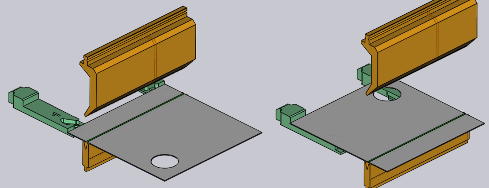

编辑折弯
可以使用折弯面板查看和编辑折弯的基本设置。要调出特定折弯的折弯面板：
-
单击折弯导航器中的折弯以选择折弯。
-
再次单击同一折弯可打开折弯面板以编辑该折弯。另一种方法：
-
Ctrl+单击折弯导航器中的折弯，选择折弯并打开该折弯的编辑面板。
“折弯”面板

“折弯”面板看起来像旁边的图像。它有一些设置和操作，用于在折弯上工作。
-
位置 输入用于沿着机床移动折弯。此处显示的值是折弯_左端_在机床刻度上的位置。（您也可以拖动折弯交互地设置位置，请参阅下面的部分）。
-
夹具 和工站列表用于移动此折弯操作到不同的设置，一个[1]或到不同的 [2]在此设置中。这些选项仅在零件具有多个设置或设置分别有多个工站时显示。（您也可以将折弯移动到不同的工站：只需单击工件并拖动，直到它与另一个工站对齐）。
-
旋转折弯件 按钮用于_翻转_零件（用另一边将其插入机床）。下图显示了点击此按钮的效果（再次单击此按钮将恢复原始方向）：
 -
当您编辑_多跨度_弯曲（折弯由两个或多个共线折弯跨度组成）时，分离按钮出现。如果分组的折弯_可以_取消分组并作为单独的折弯处理，此按钮可用于将此折弯操作分成两个独立的操作。下图显示了折弯1（在排序模式中显示为1a和1b）在取消分组后分为折弯1和折弯2：

-
角度测量 链接用于显示此折弯的_角度测量面板_。仅当一种或多种角度测量方法可用于所选机床时，此按钮才可见。
-
跳过折弯 按钮用于告知TecZone Bend不要处理这个特定的折弯。这有助于将一些折弯标记为使用与折弯机不同的技术进行处理（例如，冲裁或翻板折弯机）。[3]
-
打开模中折弯 复选框以指示TecZone Bend使用压模折弯操作。只有在可以进行压模折弯时这才会启用（通常，这意味着存在可以使用的具有压模折弯能力的上模和下模）。压模折弯需要更多的压力，但可能会导致比空气折弯更紧的折弯半径。压模折弯还要求您有具备进行此折弯操作所需确切角度的上模和下模。
-
打开预折弯选项将把此折弯拆分为两个单独的操作——预折弯和再折弯。默认情况下，TecZone Bend将移动再折弯到顺序中_下一个_折弯之后的位置。有关使用预折弯的更多信息，请参阅以下部分。[4]
-
使用返回 和继续按钮循环编辑零件中的不同折弯。
高级操作
以下是您可以对折弯进行的一些更高级的操作。
使用预折弯
某些类型的碰撞可以通过将折弯操作拆分为预折弯和再折弯进行避免。下面是一个简单的示例：

上面的零件有两个折弯，在第二个折弯处，零件与下模导轨碰撞。无法通过更改顺序来修复此问题。一个可能的解决方案是：通过选择折弯1并启用预折弯复选框，从而在折弯1处引入预折弯。

如图所示，这会将折弯1分成预折弯和再折弯（现在变成折弯3）。折弯导航器上的图标现在指示折弯1是预折弯，而折弯3是再折弯。您可以使用预折弯角度输入框来微调预折弯的角度。在此示例中，角度设置为120，所以在第一阶段零件从平面状态（180内角）折弯到120度，然后在第二阶段折弯到90度。因此，在折弯2的加工过程中，第一个法兰没有完全折弯，由此避免了与下模导轨的碰撞（下图显示了加工折弯2和3时的情况）：

编辑多个折弯
可以同时编辑多个折弯。为此：
-
单击折弯导航器中的折弯以选择它。
-
按住Shift并选择其他折弯以一起编辑它们。

此时将显示类似于旁边的编辑面板。可以在所有折弯上完成的一些编辑操作，显示在这里。此外，此面板可能会显示一些附加按钮：
-
如果选择两个或多个共线折弯，则会显示分组按钮，这些折弯可以组合成一个单一的多跨度折弯操作。
-
当您恰好选择两个折弯时，将显示更换折弯。按钮，并且允许交换顺序中的两个折弯（仅当两个折弯_可以_在顺序中交换时才会显示）。
-
如果两个折弯是平行的、在相反的方向上并相隔短距离，还可以将它们组合成一个单一的_Z 向折弯_。在这种情况下，Z 折弯按钮显示。[5]